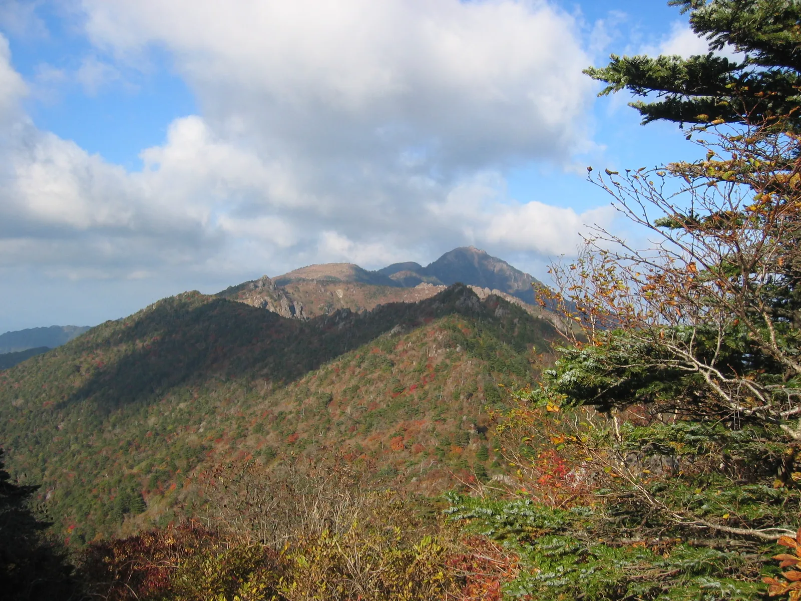

▲ 산림청은 설악산 단풍이 10월 20일께 절정에 이를 것으로 내다봤다
산림청과 국립수목원이 9월 22일, '2026년 한반도 단풍절정 예측지도'를 발표했다. 해마다 이맘때면 어느 산이 언제 절정이라더라 하는 예보가 쏟아지지만, 이번 지도는 성격이 조금 다르다. 기상청이나 민간 날씨 서비스의 추정치가 아니라, 정부가 전국 112개 지점의 실측 데이터를 바탕으로 내놓은 공식 자료이기 때문이다. 설악산은 10월 20일, 한라산은 11월 6일 무렵 가장 짙게 물들 것으로 예측됐고, 올해 절정 시기는 최근 5년 평균보다 약 0.8일 늦다.
1. 오늘 나온 지도, 뭐가 다른가 — 9월 14일 점봉산에서 시작된 관측
이번 예측지도의 출발점은 9월 14일 강원 점봉산 산림유전자원보호구역에서 확인된 첫 단풍이다. 산림청은 이 관측을 시작으로 10월 초 강원 북부 산지부터 단풍이 본격적으로 남하해, 10월 하순이면 전국 곳곳에서 절정을 맞을 것으로 내다봤다.
이 지도가 다른 단풍 예보와 다른 지점은 관측 방식이다. 산림청과 국립수목원은 2009년부터 전국 권역별 공립수목원과 함께 식물의 계절 변화(생물계절)를 장기간 실측해 왔고, 국립산림과학원은 산악기상망을 통해 산림지역의 기온·습도 데이터를 따로 수집한다. 두 데이터를 겹쳐서 만든 것이 이번 지도다. 앞으로는 올해 발사된 농림위성의 광역 산림관측 자료까지 연계해, 현장 관측·기상자료·위성자료 세 갈래를 종합하는 방식으로 정확도를 높일 계획이라고 산림청은 밝혔다.
📍 카프리즘이 앞서 다룬 단풍 예측 기사와는 무엇이 다른가
카프리즘은 지난 9월 16일 기상청·국립공원관리공단·웨더아이 자료를 종합한 '단풍 남하 속도' 계산법을 소개한 바 있다(하루 20~25km씩 남하한다는 그 기사다). 이번 기사가 다루는 산림청·국립수목원 지도는 같은 가을을 다른 기관, 다른 방법론으로 예측한 별개의 공식 자료다. 두 예보를 함께 참고하면 오차 범위를 가늠하는 데 도움이 된다.
2. '절정'이라는 말, 생각보다 헐겁다 — 산 전체가 빨개야 절정이 아니다

▲ 산림청이 말하는 '절정'은 나무 전체가 완전히 물든 상태가 아니라, 잎의 절반가량이 변색한 시점을 뜻한다 ⓒ Wikimedia Commons
많은 사람이 '단풍 절정'을 산 전체가 붉게 뒤덮인 장면으로 떠올린다. 하지만 산림청의 공식 정의는 다르다. 절정은 관측 대상 나무 잎 가운데 절반가량이 물든 시점을 가리킨다. 산 전체가 아니라 특정 수종, 특정 관측 지점을 기준으로 판단한다는 뜻이다.
✅ 그래서 실제로 방문하면 생기는 일
· '절정일'에 가도 산 전체가 붉지 않고 초록·노랑·빨강이 섞여 있는 경우가 흔함
· 고도가 높은 정상부는 이미 낙엽이 지고, 초입 저지대는 아직 초록인 경우도 많음
· 계곡·능선·정상부 순으로 색이 빠지므로, 하루 코스라면 등산로 중턱에서 가장 다채로운 색을 만날 확률이 높음
· 실제 절정 시점은 그해 기온·일조량에 따라 지도상 예측일과 며칠씩 달라질 수 있음
3. 5대 명산 절정 예상일 — 어디부터 물들어 어디로 내려가나

▲ 지리산은 10월 27일 무렵 절정에 이를 것으로 예측됐다, 설악산보다 일주일가량 늦다 ⓒ Wikimedia Commons
산림청 지도에서 절정 시점은 북에서 남으로, 또 고지대에서 저지대로 순차적으로 내려온다. 유명 산들의 절정 시기 차이는 지역에 따라 최대 보름 넘게 벌어진다.
| 산 | 절정 예상일 | 참고 |
|---|---|---|
| 설악산(강원) | 10월 20일 | 전국에서 가장 이름 |
| 지리산(전북·전남·경남) | 10월 27일 | 둘레길 구간별 편차 있음 |
| 속리산(충북) | 10월 28일 | 중부권 대표 단풍 명소 |
| 내장산(전북) | 11월 4일 | 백양사·단풍터널로 유명 |
| 한라산(제주) | 11월 6일 | 가장 늦게 절정 |

▲ 내장산은 11월 4일 무렵 절정에 이를 것으로 예측됐다, 백양사 일대는 대표적인 늦단풍 명소다 ⓒ 대한민국 구석구석
수종별로 보면 좀 더 세분화된다. 전국 기준 단풍나무류와 참나무류는 10월 31일, 은행나무는 10월 30일 절정에 이를 것으로 예측됐다. 은행나무가 하루 먼저 절정을 맞는 셈인데, 이는 은행나무가 단풍나무류보다 대체로 낮은 기온에서 색이 빠지기 시작하기 때문이다.
| 수종 | 절정 예상일 |
|---|---|
| 은행나무 | 10월 30일 |
| 단풍나무류 | 10월 31일 |
| 참나무류 | 10월 31일 |
4. 왜 기관마다 단풍 날짜가 다를까 — 산림청과 기상청은 서로 다른 걸 잰다
매년 가을이면 산림청, 기상청, 국립공원관리공단, 각종 민간 날씨 서비스가 저마다 단풍 예보를 내놓는다. 그런데 이 예보들이 항상 일치하지는 않는다. 보고 있는 지표 자체가 다르기 때문이다.
| 기관 | 방식 | 기준 |
|---|---|---|
| 산림청·국립수목원 | 전국 112개 지점 생물계절 실측 + 산악기상망 | 잎의 절반 이상 변색 시점('절정') |
| 기상청 | 단풍 남하 속도(하루 약 20~25km)와 기온 변화 기반 추정 | 지리적 이동 패턴 |
| 국립공원관리공단 | 드론 촬영 영상 등 현장 모니터링, 기상청과 융합서비스 운영 | 공원별 실시간 현황 위주 |
📍 어느 쪽을 믿어야 할까
정답은 '둘 다 참고하되 여행 계획은 여유 있게'다. 산림청 지도는 장기 실측 데이터에 기반한 절정 예측이라 계획을 세우는 기준점으로 삼기 좋고, 기상청·국립공원관리공단의 실시간 현황이나 드론 영상은 출발 직전 최종 확인용으로 유용하다. 두 예보가 며칠씩 차이 나는 건 오류가 아니라, 서로 다른 방식으로 같은 현상을 재고 있기 때문이라는 점을 기억해두면 된다.
5. 왜 올해는 0.8일 늦어졌나 — 기후변화와 다가올 위성관측
올해 절정 시기는 최근 5년 평균보다 약 0.8일 늦은 것으로 분석됐다. 하루가 채 안 되는 차이라 크게 체감되지는 않지만, 단풍 시기는 기온과 일조량 등 기상 조건에 민감하게 반응하는 만큼 매년 조금씩 달라지는 추세 자체가 관측 대상이다. 실제 절정 시점은 지역별 날씨에 따라 지도상 예측일과 다소 달라질 수 있다는 것이 산림청의 설명이다.
앞서 언급했듯 산림청은 올해 발사된 농림위성을 광역 산림관측에 연계해, 현장 관측·기상자료·위성자료를 종합적으로 활용하는 방식으로 예측 정확도를 높여나갈 계획이다. 위성 자료가 더해지면 지금처럼 112개 관측 지점 사이의 '빈 공간'까지 촘촘하게 데이터를 채울 수 있어, 기후변화에 따른 산림의 계절 변화를 보다 정밀하게 추적할 수 있을 것으로 기대된다.

▲ 한라산 정상부 항공 사진(계절 무관 참고용). 상록 관목과 초지가 많은 한라산은 활엽수 위주의 내륙 산들과는 단풍이 드는 방식 자체가 다르다 ⓒ Wikimedia Commons
6. 그래서 언제 어디로 가야 할까
✅ 지역별 방문 타이밍 정리
· 10월 셋째 주 — 설악산 등 강원 북부 고산 지역 우선 고려
· 10월 넷째 주 — 지리산·속리산 등 중부권 산지가 절정에 근접
· 11월 첫째 주 — 내장산 등 전북권, 도심 은행나무·단풍나무 가로수길도 이 시기에 맞춰짐
· 11월 둘째 주 전후 — 한라산 등 남부·제주 지역이 마지막 절정
· 출발 전에는 산림청 지도로 큰 흐름을 잡고, 기상청·국립공원관리공단의 최신 현황으로 재확인하는 방식을 추천
요약
산림청과 국립수목원이 9월 22일 발표한 '2026년 한반도 단풍절정 예측지도'에 따르면, 설악산은 10월 20일, 지리산 10월 27일, 속리산 10월 28일, 내장산 11월 4일, 한라산 11월 6일 무렵 각각 절정을 맞는다. 전국 단풍나무류·참나무류는 10월 31일, 은행나무는 10월 30일이 절정 예상일이며, 올해는 최근 5년 평균보다 약 0.8일 늦다.
이 지도는 전국 112개 지점의 실측 생물계절 자료와 산악기상 데이터를 바탕으로 만들어진 정부 공식 예측이라는 점에서, 남하 속도 추정 위주인 기상청 예보나 실시간 현장 모니터링 중심인 국립공원관리공단 자료와는 성격이 다르다. 같은 가을을 놓고 며칠씩 다른 날짜가 나오는 건 어느 한쪽이 틀려서가 아니라, 서로 다른 방법론으로 같은 현상을 측정하고 있기 때문이다.
산림청은 앞으로 농림위성 자료까지 연계해 예측 정확도를 높일 계획이라고 밝혔다. 방문 계획을 세울 때는 이 지도로 큰 흐름을 먼저 잡고, 출발 직전 실시간 현황으로 다시 확인하는 것이 가장 확실한 방법이다.